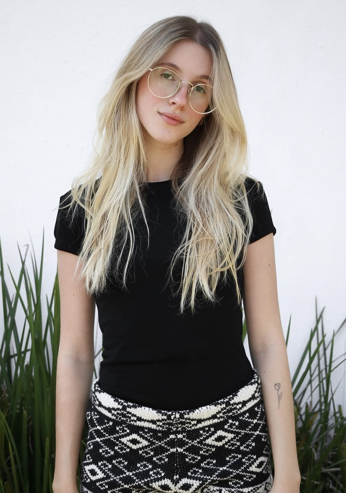

Beatrice Lowatzki Baptistella
Aspirante à moda
Crocheteira
Criativa
Quem Sou?
Olá, sou a Beatrice! Sou apaixonada por moda e aprendi a fazer
crochê de maneira autodidata em 2020. A partir de então, essa técnica se tornou parte da
minha identidade e busco sempre explorar
diferentes pontos e materialidades para
evoluir e criar repertório.
Esta é minha página profissional e
aqui você pode encontrar meu portfólio e meu curriculo clicando nos
botões abaixo ou navegando pelo menu :)
- Idade 20
- Nacionalidade Brasileira
- Cidade/Estado São Paulo, SP
- E-mail beatrice.baptistella@gmail.com
- Telefone +55 (11) 98399-8797
- Freelance Disponível
- Instagram pessoal beatrice.bap
- Instagram da minha marca Lamponi